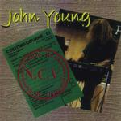

| Artist: | John Young |
| Title: | N.C.V. No Commercial Value |
| Label: | Heritage Records HR002 |
| Length(s): | 49 minutes |
| Year(s) of release: | 2000 |
| Month of review: | [02/2001] |
| 1) | Asteroid | 3.57 |
| 2) | Voyager | 4.28 |
| 3) | Chance Encounter | 4.17 |
| 4) | Ascent | 5.11 |
| 5) | A Clearer Sky | 5.06 |
| 6) | Daybreak | 3.01 |
| 7) | Corpus | 4.12 |
| 8) | Bible White | 3.20 |
| 9) | Whirl | 4.04 |
| 10) | Araindi | 4.31 |
| 11) | Air Miles | 4.09 |
| 12) | Sapporo | 3.15 |
Voyager opens with a heart beat sound, rather low and then beautiful electronic music unfolds. The music may sound a bit romantic (some of the melodies are), but there's also something very tender here.
Chance Encounter opens a little too romantic for my tastes, a bit in the style of David Lanz. The music continues to soothe and seems a bit like a lullabye you might hum for your children. The songs features some violin sounds (or is it maybe real violin?). It does give the music a more ethereal sound, and takes away a bit of the plain romanticism.
A friendly piano piece is Ascent, with long ascending dreamy tones on the keyboards. Here I am reminded at times of Sakamoto, say during Merry Christmas Mr. Lawrence. Chilling out time then with A Clearer Sky, which is rhythmically and also by the overall sound of it, a modern track. Not very loud though.
Eerie sounds and piano feature on Daybreak. With some low accidental bass (it seems), this is a track with many high frequency sounds. Corpus is a more peaceful track, very melodic and slow with a panflute like sound.
More up-beat is Young's Bible White. I have no idea what he plays here, but it seems like he's taking a guitar and plucking it really actively. In a way there IS something of King Crimson/Fripp in there, but only during the guitar sound. The music is strangely enough followed by some wonderfully melodic choral music and afterwards we return again to the beat of before.
After the easy going Whirl, percussion rears its head again in somewhat thin sounding Araindi. Plenty of variation in melody and sound make it rather disjointed adventure.
With Air Miles the modern rhythmics do not go away. A sampled female voice punctuates the dreamy melody lines and a piano tinkles away. Not bad, but compared to earlier tracks it has too little to say. The final track is Sapporo, which is a soothing track with slight references to Japan.
Jurriaan Hage